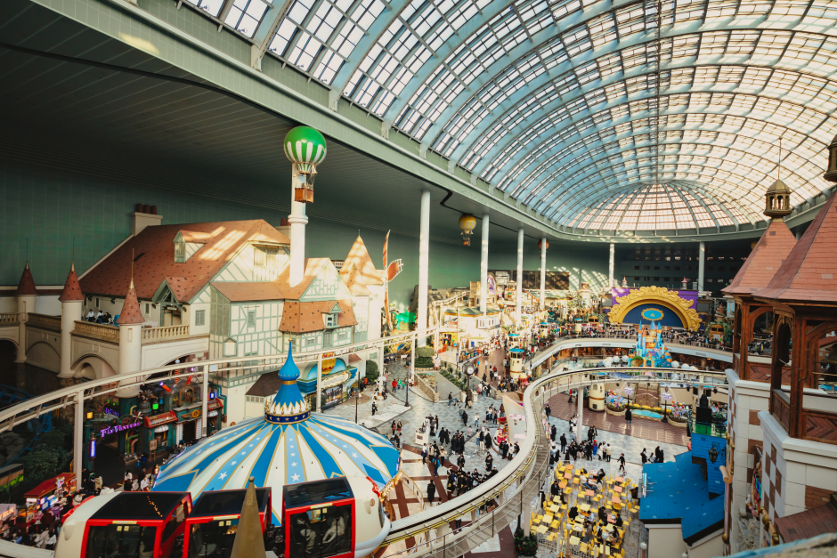

SEOUL, South Korea
Seoul, the vibrant capital city of South Korea, is a destination that offers visitors a glimpse into the country's rich history, vibrant culture, and modern technological advancements. The city's stunning blend of ancient and modern architecture, as well as its fascinating street markets and cutting-edge skyscrapers, make it an exciting place to explore. One of the city's most iconic attractions is Gyeongbokgung Palace, which was built in the 14th century and has undergone extensive restoration over the years. This vast complex once had more than 7,000 rooms and was the seat of power for the Joseon dynasty. Visitors can stroll through the palace's spacious courtyards, admire its intricate architecture, and even witness the changing of the guard ceremony. Another must-visit attraction in Seoul is the Dongdaemun Design Plaza, a striking conference center that features a futuristic curved design and a rooftop garden. This modern architectural masterpiece hosts fashion shows, exhibitions, and other cultural events throughout the year.
I mainly want to visit South Korea because of my liking for KPOP and korean culture in general. I am also interested in going to Lotte World. I have seen many videos with Kpop Idols going to Lotte World and it caught my eye. I thought to myself that one day I want to be able to visit Lotte World when I get the chance to come to Seoul. It's no secret that South Korea has taken the world by storm with its cultural exports, and K-pop is no exception. From chart-topping songs to stunning music videos, K-pop has become a global sensation, and it's no wonder that fans from around the world are eager to visit the birthplace of this cultural phenomenon. In addition to K-pop, South Korea is also known for its delicious food, beautiful landscapes, and unique customs. For those who are fans of K-pop, visiting South Korea is a dream come true. The country has a thriving entertainment industry, and fans can visit music venues, dance studios, and even attend live performances by their favorite idols. There are also many K-pop themed attractions, such as the SMTOWN Coex Artium in Gangnam, which features exhibitions, merchandise, and interactive experiences related to K-pop.
Go back